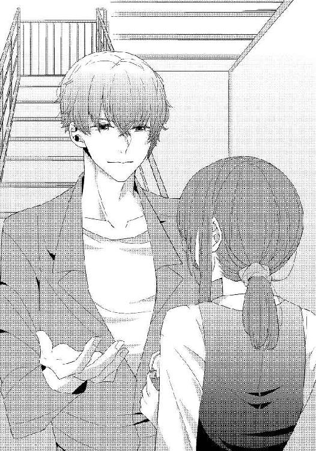
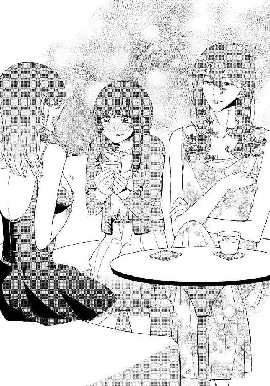
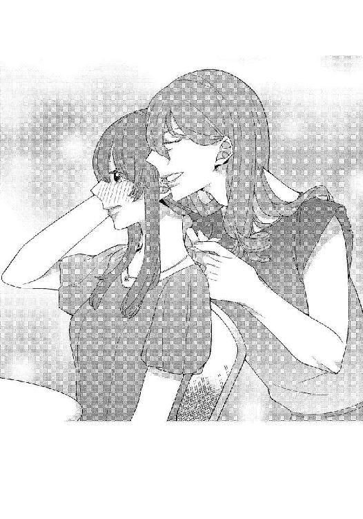
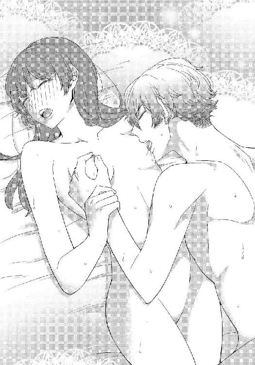

| オネエBAのうる恋タッチアップ【イラスト入り】 (無敵恋愛S*girl) | |
| 栗谷あずみ | |
| 株式会社 ぶんか社 (2018) | |
株式会社 ぶんか社
オネエＢＡのうる恋タッチアップ
栗谷あずみ・著
春瀬なつた・イラスト
※本作品の内容はすべてフィクションです。
実在の人物・団体・事件などには一切関係ありません。
百貨店『天城屋』七階、リビング用品売り場。
贈答用の洋食器をお求めのお客様の接客を終え、在庫管理のためにバックヤードに向かおうとした私を、平井マネージャーが呼び止めた。
「吉田さん。ちょっと！」
なんだろう、と思う。渋い顔をしているが、私にはまるで心当たりがない。
平井マネージャーは私を従業員用の階段まで連れ出すと、いきなり怒鳴りつけた。
「どうなってんだ！ 裏の商品棚、片づけとけって言っただろ？ 今日メーカーから大量に商品が届くからって。言ったよな？ 俺」
威圧的にすごまれ、体がすくむ。
確かに昨日、その指示を受けたが、店舗にクレームが入り、松木さんという後輩社員から、対応を代わってほしい、棚は代わりに片づけておきますから、と頼まれたのだ。
クレーム対応は閉店時間まで食い込み、時間に追われながら締めの作業を行ったので、松木さんがきちんと棚を片づけてくれたかどうか、確認していなかった。
私に非がないわけではないし、平井マネージャーは不機嫌になると、部下の意見に聞く耳を持たない。それに若くてかわいい松木さんは平井マネージャーの「お気に」なので、指摘すればなおさら気分を害しかねなかった。
「すみません。今すぐ、片づけます......」
「もういい、朝、松木さんにお願いしてやってもらったから。でも、責任持ってやってもらわないと困るんだよなあ。入社何年目だ？ おまえ」
「申し訳ありません......」
「プライベートもだらしなくしてるから、三十すぎて嫁のもらい手もないんだろう。松木さんとか契約さん見習って、もう少し女らしくしろよ」
「......はい」
私はおとなしくお叱りを受ける。
仕事の領分を越えて人格攻撃までされるのはつらかったが、怒っている男性に逆らうのは勇気がいる。私が地味女で目の保養にならないのは事実だったし、我慢さえしていれば、そのうち終わることだ。
我慢には、慣れた。上司のヒイキに、情実人事、社内不倫、女性の多い職場ならではの陰口、同調圧力......。あこがれだった百貨店勤務の実態を知って、失望もしたけれど、まあ、現実はこんなものかもしれない。
「女の幸せを捨てて仕事に生きる気なら、もう少しがんばって......、ん？」
ネチネチとしつこくイヤミを繰り出していた平井マネージャーの視線が、階段の方へ泳ぐ。
ぽん、ぽん、と弾むようにして、女性もののポーチが階段の上を転がり落ちてきた。
「ああーっ。待ってー、アタシのポーチ！」
追いかける声に、思わず平井マネージャーと顔を見合わせてしまう。
声が、低い。ハスキーな女性というレベルではなく、どう考えても、成人男性の声だ。
声に続いて踊り場から現れたのは、長身で、いわゆる爬虫類系の顔立ちで、短髪の──やはり、男性なのだった。
細身のスーツをまとった彼は、私と平井マネージャーが見上げる中、まるでレッドカーペットの上を歩く女優のように、優雅に階段を降りてくる。
（男の人、......よね？）
社員だけではなく、警備員や掃除のおばさんなど、色々な人がいるのが百貨店のバックヤード、とはいえ、こんな人までいるとは。 彼は男性の格好をしていながら、言葉遣いも身のこなしも、まるでオネエタレントのようにフェミニンだ。
思わず見入ってしまっていた私は、ハッと我に返ると、ポーチを拾い、階段をのぼってその人に手渡した。薄い唇が、アリガト、と動く。男性なのに眉やアイラインを描いていることに一瞬違和感を覚えたけれど、彼にはよく似合っていた。

その人は、戸惑っている私から、階段の下にいる平井マネージャーに視線を流す。
「お取り込み中、失礼しました。あの、リビングのマネージャーさんですよね？ 熱心なご指導、頭が下がりますけど、実は、休憩室のある九階まで、声、つつ抜け。女のコの歳の話なんて、ハラスメント防止研修をやっている人事の耳に入ったら、まずいんじゃありません？」
「セクハラなんて、そんな、心外......」
「そうそう。男の我々には思いもよらないことが、女のコの気持ちを傷つけてしまうようだから。気をつけないといけませんね。百貨店は、お客様も、販売員も、女性が多いですし」
「それは、あー、そうかもしれないが」
平井マネージャーはタジタジた。こんな上司の姿は初めて見る。元々、相手の性別や立場を見てコロコロ態度を変える人だが、オネエさん相手だと、どう出ればいいか判断がつかないのだろうか。
もっとも、どうしていいかわからないのは、私も一緒だったけれど、
（......もしかして、かばってもらってる？）
ふいに、ピンと直感が働く。
さりげなく私たちの売り場を口にして、本当に上階でえらい人が話を聞いていたら平井マネージャーが困るように、話を持っていっているような気がした。
問題は、かばわれる理由が、私には心当たりない、というところなのだけれど......。
「アタシは、一階の『ラ・フェット』の美容部員、椿沢保です。管理職だから、ハラスメント防止研修も参加させられて、テナント社員にまで厳しい！ と思ったけど、さすが歴史のある『天城屋』さん、有望な女性社員の職務妨害なんてしていたら、未来がない......、そういえば、聞こえちゃったんだけど、あなた、上司に頼まれたこと、放り出しちゃったの？」
再び、椿沢と名乗った彼の視線が私に向く。
目力に圧倒されて、ごくんと唾を飲んだ。
「......あ、えっと」
「ダメでしょ、職務放棄は。頼まれごとほっぽり出して、一体何してたの？ 男の社員とイチャイチャしてたとか？」
「そんな......。ほっぽり出したわけではありません。後輩社員にクレーム処理を頼まれて......」
平井マネージャーが言い訳を嫌うので、弁明するつもりはなかったのだが、さすがに男遊びを疑われて、ハイそうですとは言えなかった。
女子校出身のせいか、男性と何を話していいのかわからないところがあって、恋愛には縁がないまま、三十三年間、生きてきたのだ。 あまりに身に覚えのない誤解は、困る。
椿沢さんは私の答えを聞いて、ニンマリと微笑んだ。
「へえ......？ それじゃ、あなた......」
「よ、吉田さん！ 俺はこの後、会議だから、店舗の方頼むよ」
「は、はい」
平井マネージャーは突然、椿沢さんの言葉を遮るように言い捨てると、速足で去って行く。
展開に驚いていると、頭上から、共犯者めいた声が響いた。
「残念、逃がしちゃったわね」
「もしかして、助け舟を......？」
「ま、ね。部下の指導にしては聞き苦しい言葉が続くから。感情的な男は大キライ。あなた、悪くないみたいだし、叱られたこと、気にしちゃダメよ。......それにしても、あなた、吉田さん？」
ふいに、椿沢さんが笑顔を引っ込める。私の顔とネームプレートを交互に見つめるので、思わず視線を泳がせてしまった。
化粧品売り場の美容部員さんは、百貨店の花形だ。ほとんど話したことなんてない。カウンターも敷居が高くて、化粧品の買い物は近所のドラッグストアで済ませていた。
美容部員さんは、自分の美にも他人の美にも、厳しいイメージがある。椿沢さんもとてもおしゃれで、全身にスキがなかった。女子力が高い人に見つめられると、最低限のお手入れしかしていない自分が恥ずかしくなる。
何を言われるか、緊張でドキドキしていると、椿沢さんの唇が動いた。
「なんか、おブス......」
「......ですよねえ」
ストレートな指摘に、納得こそすれ、傷つきもしない。家と職場の往復で、どうせ見る人もいないしと、自分を飾る楽しみとはずいぶんご無沙汰だった。
言われた私があっさり受け流したのに、言った椿沢さんの方が、ハッとした顔をする。
「やだ！ アタシったら。ひどいこと言ってごめんなさい」
「いえ。人事に訴えたりしませんし」
「そういうことじゃなくって！ 違うの、あなたってば、構わなさすぎ。乾きすぎ。素材は悪くないのに......。ねえ、今日早番？ 遅番？」
「早番ですけど」
「よかった！ 乾燥肌に最高にキく基礎化粧品のサンプルがあるの。失礼なこと言ったお詫びと言っちゃなんだけど、アタシにタッチアップさせて」
「え......いえ、私は......」
百貨店の高級コスメなんて、干物女子の私にはもったいない、と辞退しようとしたが、彼は聞く耳持たず、軽いノリで、ぎゅ、ぎゅっと私の両手を握った。
「いいから、いいから！ サンプルだけよ、無理に商品買わせたりしない。うるっうるの肌にしてあげる。任せて！ 仕事終わったら従業員出入口で待ってなさい。約束よ、約束！」
一気にまくしたてると、椿沢さんは階段を軽やかに駆け降りていく。
私は、男性とは思えないほどしっとりとした手の感触と、強引に結ばれた「約束」の二文字を持て余しながら、その場でぼうぜんとしてしまった。
「ごめーん、待った？」
その日の十九時すぎ。百貨店の従業員出入口で待っていると、声をかけられる。
顔をあげたが、日中の彼の姿は、そこにはなかった。代わりに、色鮮やかなワンピースを着た、栗色ロングの巻き髪のおねえさんが立っている。なんとフルメイクだ。
「......椿沢さん？」
「あ、長くて呼びづらいでしょ。ツバキでいいわ」
「そのお洋服は......」
「イイでしょ？ 四階で買ったのよ」
「どうして......」
「婦人服、好きなの。スーツもいいけど、メイクやアクセで遊べるのは断然こっちよね」
イエーイ、と手を伸ばされて、私も反射的に手を出してしまう。人に触れられるのがあまり得意ではない私だけど、ツバキさんのボディータッチは学生時代の女友達のそれとまったくノリが同じなので、意外と抵抗なく受け入れてしまった。
「アタシはこれが普通なんだけど、吉田さんはこんなカッコのやつと一緒に歩くの恥ずかしい？」
「いえ。カッコイイと、思います」
上司の理不尽な叱責から助けてくれた彼を傷つけたくなくて反射的に答えたものの、よくよく考えると、それが自分の本心のようだった。
男の人が婦人服フロアで婦人服を買うなんて、とても勇気がいりそうだし、職場の男子更衣室で婦人服に着替えて、堂々と従業員出入口から出てくるなんて、周りの人の反応や陰口に怯えていたら、絶対にできないことだ。
でもツバキさんは堂々としている。
それが、人の顔色を伺ってばかりいる私には、まぶしい。
彼は上機嫌に微笑むと、私の腕に自分の腕を絡ませて歩き出した。
「ふふっ、アリガト。じゃ、行きましょ」
「あの、『ラ・フェット』さんのカウンターに行くんじゃないんですか？」
ツバキさんが足を向けたのは、天城屋の正面玄関とは逆の、繁華街の方向だ。
「吉田さん、お腹すかない？ まずは小腹満たしましょ。お酒はイケる？」
「え、はい......」
「じゃ、飲も！ クソ上司に絡まれた憂鬱、吹き飛ばそー！」
一緒に食事をするなど想定外だったが、うっかり彼のペースに巻き込まれてしまう。
そして、ツバキさんに連れて行かれたのは、それまでの私の行動範囲には、まったくなかった場所だった。
（ひゃー！ すごい、言葉にならない......）
きらびやかな照明にミラーボール。丸い舞台の中をところ狭しと踊り回る、華やかな衣装をまとったダンサーさんたち。
ツバキさんの行きつけらしいショーパブでは、本格的なダンスショーの他、妖艶なポールダンスや、お笑い芸人のモノマネ、ちょっとエッチな小芝居など、多彩なエンターテインメントがおもちゃ箱のように飛び出してきた。その華麗さにも驚かされたが、美女にしか見えないダンサーさんが、ニューハーフと呼ばれる性別適合手術を受けた元男性と聞いて、ますますびっくりした。
ジェンダーフリーなショーにドギマギしたり、お腹の底から笑ったりして、なんだか久しぶりに心を動かした気がする。
ショーが終わると、センターで踊っていたダンサーさんが、私たちのテーブルにやって来て、ツバキさんの肩に手を置いた。
「ツバキ、おひさ。アゴの下黒いわよ」
「ウソおっしゃい。ちゃんと処理してきたわ。えれん、あんたこそ太ったんじゃなーい？」
「わかる？ やばいのよお......」
ふたりは顔なじみらしい。
痛烈な皮肉を笑顔で繰り出し合っている。
学生時代の友人とは就職して以来休みが合わず、気兼ねしない会話に飢えていた私には、ふたりの関係がうらやましく思えた。
借りてきた猫のように座っている私に、ダンサーのえれんさんは気安く話しかけてくる。
「うちは初めて？ なんて呼んだらいい？」
「あの、和音です。初めてです」
初めてだから、パブと名のつく、接客してもらえるお店で、どう振る舞っていいのかわからず、ツバキ、えれん、と親しく呼び合うふたりに合わせるように、つい下の名前を名乗ってしまった。
えれんさんはスマートな客じゃない私にも、ほわんとした癒やし系スマイルを向けてくれる。
「そう。ようこそ。和音ちゃんは、ツバキの同僚？」
「この手抜きメイクでＢＡは許されないでしょ〜。和音ちゃんは天城屋の社員さん。元気ないから無理やり飲みに誘っちゃった」
「相変わらず強引なやつ。和音ちゃん、最初びっくりしなかった？ 百貨店にオネエ言葉の人、他にいないんじゃない？」
「うーん......私は初めてお会いしました」
「そうよねえ。老舗百貨店の格式が〜とか、上役に注意されないの？ ツバキ」
「言わせないだけの数字あげてる」
「まあ、小憎らしい男。大体ねえ、乳もないくせに、そんな胸元あいたワンピ着て、生意気よ。Ｆカップの私までとはいかないにしても、詰め物くらいしたら？」
えれんさんは、黒いドレスの上から自分の胸を持ち上げ、たゆんたゆんと揺らす。
私は思わずそのボリューミーな胸元を見つめてしまった。

「和音ちゃん。うらやましそうな顔。分けてあげようか？」
「できるものなら......！」
「ふふ、冗談よ。和音ちゃんのは私のと違ってホンモノなんだから、好きな男に揉んでもらえば、いくらでもおっきくなるわ」
「そんな相手がいたら、こんな歳まで、このサイズじゃないのでは......！」
「これからよ、これから。可能性は無限大！」
お酒の力を借りてきわどい会話を楽しみながら、知り合いとはたとえ泥酔してもこんな話はできない、と思う。ニューハーフさんや女装ダンサーさんの存在をごく自然に受け入れているこの場所だから、私も「女だから女らしくしなきゃ」という意識から解放されて、大口を開けて笑えるし、下ネタに近い話にも応じられるのだ。
思い切り笑うと喉が渇くので、いつの間にか、つい、普段口にしない量のお酒をおかわりしてしまっていた。
「......和音ちゃん」
目を開けると、薄暗い天井が目に入った。 心配そうに、ツバキさんが私を覗き込んでいる。
「おバカ。飲みすぎよ。住所も言えないくらい酔っちゃダメじゃないの。ここ、ショーパブの近くのホテル。もう電車ないわよ」
「......ウソだぁ......」
冒険のできない小心者の私が、そんなに羽目を外せるわけがない。
「ウソじゃないわよ」
少しずつ眠りから覚めて、感覚が戻ってきた。ダブルベッドのマットレスの感触、枕元を照らすムーディーな間接照明、ウィッグを外し、洗い髪で白いガウンを着ているツバキさん......。
一生自分の身に起こるとは思えなかったシチュエーションに、がばっ、と跳ね起きた。
思わず自分の格好に目を走らせてしまう。
服は、ちゃんと、着ていた。
安心して、思わず体の力が抜けそうになる。
「おっと。二度寝の前に化粧落としなさい。約束通り、タッチアップしてあげる。とりあえず、洗顔からよ」
そう言ってツバキさんは洗面所についてくる。
まだ完全に眠気が取れず、これくらいでいいや、とおざなりに洗顔を済ませようとすると、プロの厳しいダメ出しが飛んできた。
「だめだめ、和音ちゃん、まだメイク落としが残ってるってば。貸して。服が濡れるから、頭、下げて」
ツバキさんは、洗面台に立つ私を後ろから両腕で抱え込むようにして、水道から出るお湯を手ですくう。
（すっかり同性と一緒にいるつもりだったけど、少なくとも、この人の体は、男なんだ......）
私を腕の中に包み込めるほどの体格差と、背中や腕に触れる筋張った筋肉の感触を意識し始めたら、心臓がドキドキしてきた。
（ホテルに男女ふたりきり......。何も起こらないわけがないのでは......。どうしよう......）
「お顔に触れるわよぉ。じっとして」
「ひゃっ......」
緊張がＭＡＸに高まったところで、しなやかな指が頬に触れる。
（うううっ......意識してしまったせいか......変な声出た......）
ツバキさんは私の挙動不審を気にかける様子もなく、指の腹や側面を使い、顔についたオイルを洗い流した。ヘアサロンでシャンプーされている時のような気持ちよさに、ぼうっとしてしまいそうになるが、しかしそれどころではない。
（もし、ツバキさんがその気になって誘ってきたら──ううん、いきなりガバッと襲いかかってきたら、どうすれば？ こんなことで処女喪失？ むしろ捨てておくべきなの？ 走って逃げるほど、ツバキさんのことがイヤなわけではないけれど......）
心ここにあらずのままうろたえているうちに、洗顔が終わり、ツバキさんは私の顔に一回だけタオルを押し当てた。
そのまま寝室に戻される。
「はい、じゃ、横になって楽にしてて」
ある意味、覚悟を迫られる心地で、私は再びベッドにあおむけに横たわった。まな板の上の鯉というのは、こんな気持ちなのだろうか。おそろしくて目を開けていられず、薄目になる。
「........................ぶぎゃ」
冷たい感触が、未知の経験を前にこわばった顔全体に、べしゃりと覆いかぶさった。
「この化粧水の実力がすごいのよ。あと、こっちの......あ、ティッシュパックしてて見えないか。ま、いいや。このまま三分、保湿成分がお肌に浸透するまで待ってね」
（ティッシュパック......これ、ビジュアル、ひどいのでは。色気のかけらもないのでは......）
私は濡れたティッシュが顔からずれ落ちないように、少しだけアゴを動かして頷いたが、多分これは、見てくれも悪い上、地味に呼吸もしづらい。
三分後、ツバキさんはティッシュをはがし、肌に乳液と美容液を重ねづけしてくれた。
「明日のお肌が楽しみね。朝、お化粧もしてあげるから。あ、おうちの人がいるなら、外泊の連絡しといた方がいいわよ。じゃ、おやすみ〜」
「......え......」
タッチアップの間中、いつ彼がオオカミに変わるか気が気でなかった私は、あっさり備えつけのソファに向かうツバキさんに拍子抜けした。
（や、やっぱり、ティッシュパックの臨終顔に、その......萎えた、とか？）
困惑しつつ、声を出す。
「あ、あの、ツバキさん、私がソファでいいです！ その、私が飲みすぎたせいで、ツバキさんまで帰れなかったんだし」
「ばぁか。アタシは紳士なのよ。こういう時は男にいいカッコさせなさいよね」
背中を向けたままツバキさんが返事した。 そう言われてしまうと、二の句が継げなくなる。
（ここで、男......を名乗る、のかぁ）
男性というのは、密室で異性とふたりきりになったらとりあえずその気になるものだと思い込んでいたが、ツバキさんはそうではないようだ。
（言葉通り紳士なのか、私にあまりに魅力がないからか、彼の恋愛対象が男の人なのか......）
オネエという人たちのことをよく知らないために混乱しつつ、何も起こらなかったことに脱力して、私は朝まで、ベッドで熟睡してしまった。
ツバキさんとは、その日以来なんとなく意気投合して、一緒に従業員食堂でランチしたり、仕事終わりに飲みに行ったり、休日に待ち合わせてホテルのケーキバイキングに行ったり、女友達のように気の置けないお付き合いをしていた。
社会人になってできた友達というのは久しぶりで、変化に乏しかった毎日に、刺激とハリを与えてくれている。
今日も、早番であがった私は、接客で少し遅くなるというツバキさんを、オーガニックカフェの二階席で待っていた。
「お待たせ！ 和音ちゃん。今日はどうする？」
「私、駅ビルのバーゲンに行きたいです」
「ＯＫ、でも喉乾いたからちょっと待って」
「はい」
上司や女性の同僚に、自分の意思をあまりはっきり伝えると角が立ちやすいけれど、ツバキさんはそういう空気の読み合いを「キライ！」と一刀両断にする、竹を割ったような性格だ。
こちらとしても、言葉の裏を読むようなことをしなくてよくて、ポンポンと思い浮かんだことを口にできる。とても楽なのだ。
ツバキさんは席でコートを脱いでから、一階のカウンターに向かった。
やがてコーヒーカップ片手に向かいの席に戻ってくると、さっそく気づいてくれる。
「それ、こないだ買ったワンピ？」
「はい。さんざん悩むのに付き合わせてしまったので、最初に着たとこ見てもらいたいなって」
「ふうん」
ツバキさんはにやにやと笑みを浮かべて、私の頭の先から足元までを見やる。
ファッションチェックの気配に、緊張しないではなかったけれど、初対面の時のようないたたまれなさは感じなかった。
あの時よりは、私も肌や爪の手入れをがんばっているし、暴飲暴食や夜更かしなどの生活習慣を改めて、少しやせてもいる。そのうちまたツバキさんと会うんだから、あまりみっともない姿は見せられない、と思うと、自然と気が引きしまるのだ。
あまり気の抜けた格好をすると、耳が痛いことを言われてしまうが、それも慣れてくるとなんとなく愛のあるダメ出しというか、「ちゃんとすればかわいいんだから」という気持ちが滲んだ言葉に聞こえてきてしまう。
それに、プロのツバキさんのくれる美容情報は、正直、ものすごく役に立つのだった。
どうしてこんなにはしゃいでしまうんだろう、と思いながら、ツバキさんと会う日は、勤務時間のうちから胸が弾んで、足元がふわふわする。
「──いいじゃない。赤いワンピ、血色よく見えるし、似合う。鮮やかな色、もっと着なさいな。あら？」
ツバキさんに褒められ、悦に入っていた私は、背後に回り込む彼に、首を傾げた。
「何か？」
「和音ちゃん。首のとこ、タグがついたまま」
「ひぇっ......」
思わず変な声が出た。
ワンピースを買ったのは、私にしては背伸びしたブランドで、装飾品のようなタグを外すのももったいない気がして、部屋で試し着する時もそのまま着たのだ。しかしさすがに、朝着る時、外したとばかり思っていた。
「と、取ってもらえますか？ 裁縫セットのハサミがあるので」
ハサミを渡し、髪をポニーテールを結う時のように高く掲げる。ツバキさんはハサミを手にして、私の背後で囁いた。
「ふうん。和音ちゃんの髪、きれいよね。染めたことなさそう。全然痛んでない」
「あ、ありがとうございます......」
ツバキさんは辛口だけど、いいと思った時はストレートに褒めてくれる。裏表がない人だとわかっているので、遠回しなイヤミなどではなく、本当にそう思ってくれているのだと、安心して聞くことができた。
「それに、うなじが白くって色っぽい」
「褒めてくださっても、何も出ませんよ」
「心配してるのよ。こんな無防備な姿、あっさり人に見せて。和音ちゃんたら、天然小悪魔？」
「そんなつもりは......」
「アタシ以外の男のコに、こんな姿見せたら、襲われちゃうわよ？」
「いつも言ってるじゃないですか。そんな相手、いないです。魅力があるようなら、アタックされてますよ」
「もしかして、あなたがニブくて、アプローチに気づいてないだけなんじゃない？」
ツバキさんの指が、タグを手繰り寄せるように、首の根っこあたりで動いている。少しくすぐったい。
「まさか。何がいけないんでしょうね？」
「いけなくないわよ、全然」
「恥を忍んで告白しますけど、私、ツバキさんと友達になってから、初めて経験することも多くて......その、夜遊びもそうだし、ご迷惑をかけてしまった出来事ですけど、ラブホテルに、行ったのも......」
ああ、一体、何をしゃべり出してしまったんだろう。思うけれど今更止まらない。
かっかと、燃えるように顔が熱くなる。
「そうだったんだ」
「......そう、なんです、実は。いい歳して、お恥ずかしい」
今たまたまフリーなのではなく、ずっと男性経験と呼べるものがないのだと伝えると、ツバキさんは少し考えるような間を置いた後、ぷつん、と私のワンピースのタグの糸を切った。
「何が恥ずかしいの。そういう相手に今まで出会わなかっただけじゃないの。恥じるようなことじゃないわ。みんなに置いて行かれたくないからって、気乗りしない相手と、なんとなくヤッてしまうより、全然いい」
「......フォローありがとうございます」
「ま、これから色気を身につけたいって言うなら、協力はやぶさかではないけど」
突然、ツバキさんは後ろから私の耳元に、そっと低い声を注ぎ込むようにする。
「きょ、協力って」
「たとえば今、ここで、ワンピースのファスナーを半分下ろしてみて......」
「冗談、ですよね？」
「さーあ？ 誰か、気づくかしら」

半分笑い含みながらも、ぞくりとするくらい色っぽいかすれ声に、私の背筋はわずかにしなった。なんだろう。この感覚は。
「あ......の......、その......」
体中の血が沸騰しそうなのを感じつつ、子供っぽい反応を見せてしまう。
ツバキさんは、カフェテーブルに外したタグとハサミを置いて、向かいに座った。
苦笑している。
「新鮮な反応ね〜」
「からかわないでください。こういう冗談だって、嫌いではないけど、やっぱり慣れなくって......」
「ごめん、ごめん。そっか......。ホテルでは、やたら緊張してるなぁ、とは思ったけど。じゃあ、ごめんね。怖かったかな」
「大丈夫です。ツバキさんのことは、信頼してますから」
「......そ、そう？」
まっすぐ見つめて言うと、どうしてだか、ツバキさんは居心地が悪そうに視線をあちこちに動かした。人には言うくせに、自分は褒められるのに慣れていないのかもしれない。 少し前に、ひとつ年上だと知らされていたが、そんなツバキさんの様子を見て、かわいいと思ってしまった。
オネエさんというのは、自分とはまったく違う人だと思い込んでいたけれど、そんなこともなく、ツバキさんは、誰より一緒にいて楽な人だ。
体が男性の彼が、女性のおしゃれを極めるのは、私よりはるかに大変なはずなのに、苦にせず前向きに楽しむ姿に、勇気すらもらえる。
「女子会」を重ねるうち、私たちはすっかり親友のようになっていた。──少なくとも私は、そのつもりだった。いつも話し足りずに、夕食の後もカフェやバーに長居してしまう。
その日は、一緒に見た映画の話で盛り上がって、つい、時計を見るのを忘れていた。
「あー。終電もうないですね。この辺で安いホテル......となるとこないだのところかな」
「......じゃあホテルの前まで送っていくわ」
「ツバキさんは帰れるんですか？ タクシー？」
「いや、どこかに......泊まりはするけれど」
「じゃあ適当に泊まっちゃいましょう。最初の時みたいに、ソファで寝させたりしませんから」
「じゃあ、どうするの」
「どうするって......一緒に寝ればいいのでは？」
ダブルベッドであれば、ふたり、充分寝られるスペースがある。
「あんたねぇ......曲がりなりにも男女が」
「大丈夫。ツバキさんと私だもの」
何も起こりませんよ、と言いながら、ツバキさんの腕に腕を絡ませる。
いつもの親愛表現だ。
珍しくイエス・ノーをはっきり言わないツバキさんに、ほんのわずか違和感を覚えた時だった。
「あ、ねえ、お姉さんたち、二軒目探してる？ うちどう？ 安くするよ」
金髪すきっ歯のお兄さんに、路上で声をかけられてしまう。多分居酒屋だろうけど、ホストクラブかもしれない。
「あ、あの......私たちは......」
「今日だけだよ、飲み放題ニキュッパ！ ね、決まり！」
突然違う話で割り込まれて、しどろもどろになっていると、お兄さんは強引にすぐそばのお店に引っ張って行こうとする。
気が弱い私だけだったら、押し切られてしまっていたかもしれない。
しかし、お兄さんと私の間に体を割り込ませたツバキさんが、酔っ払いのだみ声に似せた大きな声で断った。
「もうお店で充分飲んだから、結構よ〜！」
ツバキさんを女性だと思っていたらしいお兄さんは、虚を突かれたような顔で振り返る。
その彼に、バイバーイと蠱惑的に手を振って、ツバキさんは私の手を握って、歩き出した。
少し歩いて、お兄さんが追いかけてこないのを確かめてから、私は謝る。
「......すみません。うまく断れなくって」
「いいのよ。姫を夜遊びに連れ出してるんだから、ちゃんとお守りしないと。口紅つけた騎士だけどね〜」
そう言って豪快に笑うツバキさんのことを、ちょっぴり男前だと感じてしまった。
「そうですね。頼りにしてます。誰よりも」
大真面目に打ち明けると、ツバキさんは照れたのか、目を点にしたあと、ふいっと顔をそらした。
「あー。寒かった。............」
ラブホテルの一室でコートを脱いだツバキさんは、私のことをじっと見てきた。
なんだろう。
「唇、荒れてない？ 切れちゃいそう」
「あ、うっかりリップなくしちゃって」
そんなことか、と力が抜ける。
「......塗ってあげましょうか。目、閉じて」
私は深く考えず、ツバキさんの言葉に従った。
どうして、アイメイクでもないのに目を閉じるのか、そもそも今からシャワーを浴びるのにリップなんて、とか、後で考えればふしぎなことはいくらでもあったのだけれど。
カサッ、と紙がこすれるような音がして、柔らかい感触が、唇に触れる......。
それはリップスティックを当てられる感触とは明らかに違っていた。
驚いた私は、反射的に目を開ける。
至近距離に、ツバキさんの顔があった。
「......直接、触れたわけじゃ、ないから。和音ちゃんがイヤなら、もちろんノーカンだからね？」
そう言って、ツバキさんは、人差し指と中指で挟んだあぶらとり紙を、目の前で振る。
（キス......された？ ツバキさんに？）
紙越しとはいえ、感触はしっかり残っていた。
「ツバキさん......？」
どうしてこんなこと、と尋ねたくて名前を呼ぶと、衝動にかられたように、潰れるほど強く抱きしめてくる。
ツバキさんの体は、すごく熱かった。
「大切な和音ちゃんのキス。気持ちも聞かず、ごめんなさい......。あんまり『女友達』として信頼してくれてるから......最初はそれでも、嬉しかったけど、もう限界」
「どうして？ 私、ツバキさんに嫌われるようなこと、したんですか」
「逆よ。好きな気持ちが抑えられなくなったの。最悪ね。あなたの信頼を、こんな形で裏切って」
「好き......？ それは、友達としてではなく？」
「抱きしめたいっていう、好きよ。その先も、全部......独り占めしたくなるような、好き。誰にも渡したくないし、見たことのないあなたを強引に暴いてしまいたい、そういう......。だから、アタシに──『ツバキ』に対して無防備なあなたのそばに、これ以上いたら、よくないと思って。ちゃんと、伝えなきゃいけないと思ったの」
「そんな。ツバキさんは、オネエ、で......男の人が、好きなのか、と......」
「装いと恋愛対象は、別よ。アタシには、十年以上前から、好きな女性がいる。......和音ちゃん。あなたのことよ」
驚く私に、ツバキさんは順を追って、説明してくれた。
「母や姉の持つメイク道具やお洋服がまぶしくて、女装を始めたのは高校生の時。ほんとの初歩の初歩、化粧品は何をどこまでそろえたらいいか、どうやって使えばいいか......わからないことがあっても、家族や友達に聞くわけにはいかないし、身近に相談できる人もいなくて......。ネットで同じ悩みを持っている人を探して、えれんと知り合って、人目に留まらないよう、カラオケボックスで情報交換したわ......。トイレで急いで着替えて、初めて女装姿を人に見せた。お互いブサイクすぎて爆笑して、その後、結構落ち込んだ」
「えれんさんとは、その頃からのお付き合いなんですね」
「そう。でも、あのコはずっと性別適合手術をしたがってたし、アタシはそうじゃなかった。アタシは親が産み落としてくれたままのこの体を、女のコと同じもので飾りたかったの。男の体のままじゃ、生まれながらの美女ほど似合わないのは、わかっているけど......」
「......はい」
ツバキさんにとって、すごく大切な話をしてくれているのがわかったから、私は一言も聞きもらさないよう、全神経を彼に傾けていた。
オネエの世界には詳しくないけれど、同性愛者の他にも、心と体の性別が生まれながらに違う人もいれば、女装好きの男性もいるようで、彼は最後のパターンなのだという。
いつも自信満々のツバキさんが、嫌われたらどうしよう、とでもいうように体をぎゅっと縮こまらせて黙るので、大丈夫、と言いたい一心で、彼の背中にそっと触れた。
ツバキさんは、ハッとしたように顔をあげて、話を続ける。
「......成人してからもこっそり女装を続けてたんだけど、ある日、化粧品アレルギーで顔にブツブツができて、通販でコスメを買うのが、怖くなっちゃって......。ちゃんとしたところで、色々試してから買いたい、と思って百貨店に行ったはいいけど、やっぱり男の自分が、女性ばかりの化粧品売り場のカウンターに行ったら、気持ち悪がられるんじゃないか、迷惑じゃないかって、ためらいも強くて」
「敷居、高いですもんね」
「ええ。......それで総合案内所に行ってみたの。もしかしたら、そこにもキツそうな美人しかいないんじゃないかと怯えながら──当時はね、シャイでヘタレだったもんだから。でも、カウンターの中に【研修中】の札をつけた、まだ学生みたいな新人の女のコを見つけて、このコにだったら聞ける、と思って。尋ねたの。男の自分が、化粧品売り場に行っても、いいものですか、って」
「それ......」
自信がないまま口に出すと、ツバキさんは少し体を離して、私の目を見た。ようやく気づいたか、と言うように苦笑する。
「そう。あなたよ。吉田和音、ってネームプレートをつけた女のコ。最初は女性への贈り物探しって思ったようだけど、アタシが自分で使おうとしている、とわかっても、あなたは軽蔑的な態度を取らずに、目立たない場所でタッチアップしてもらえるよう、個別にブランドさんと話をつけてくれて」
「そんなこと......」
接客業として当たり前のことだ、と言おうとしたら、きっぱりした口調で反論された。
「そんなことまでしてくれたのは、あなただけよ。本当に誰にでもフェアな態度を取れる人なんて、なかなかいないわ。現に、総合案内所であなたの横にいた先輩だって、目が笑ってて、あとでみんなに話そう、って顔をしてた。当時のあなたは、先輩ほど完璧な接客用語を使いこなせてはいなかったけど、あなたのおかげで、アタシは百貨店も化粧品売り場も、キライにならずに済んだ。最後、送り出してくれたあなたの笑顔が、ずっと忘れられなかった」
愛しげに私の頬を辿った指が、アゴをそっと掴む。まっすぐな熱っぽい視線が、正面から注がれる。逃げられない。
「ＢＡになったのは、自分と同類のコが少しでも気軽に化粧品を買えるように、っていうのが半分。いつかあなたに再会できたら、お礼が言いたい、っていうのが半分よ。時々『天城屋』さんには来てたけど、部署異動があったのか、見かけなくなって。でもどこかにいるんだろうなって信じて。半年前、今の店舗に異動してきて、偶然、従業員食堂であなたを見つけた......。遠くから見るだけで幸せだったけど、まあ、白状するわ、男の姿で、売り場も覗きに行きました。これじゃストーカーね。ごめん！」
「いえ。私、昔とあまりに変わってて。失望したんじゃないですか？」
「昔みたいな無垢な笑顔は、消えてたわね。クソ上司にどれだけイヤミ言われても、お面みたいな顔で受け流すだけで......それでつい、ひどいことを言っちゃった」
「気にしてませんよ。......別に、何があったわけでもないんです、ただ......」
「わかるわ。日々を回すことに汲々として、疲れて。あたたかい気持ちを交換する人がいなかったら、誰でもそうなるものよ。だからまずは、あなたの友達になりたかった。クソ上司に一泡吹かせてやりたいって気持ちも、膨らみ切っていたし。でも、ダメね、近づきすぎた！ 思った以上に仲良くなれちゃって、友達だと安心しきって無防備に笑うあなたに、もう手を出したくってしょうがない！......だから、さっくり引導渡して、諦めさせてちょうだい。そうしてくれたら、今まで通り、変わらず友達でい続けるから。和音ちゃんさえよかったらね。一度だけ、ちゃんと告白するわ。ずっと好きでした。吉田和音さん。アタシに恋を教えてくれて、ありがとう」
ツバキさんは、未練を断ち切るように首を振り、笑顔を浮かべた。
私は彼の告白の間、なんて言えばいいのかずっと悩んでいた。ツバキさんを異性として意識したことがなかったから、自分の気持ちがまだ見えづらいところはある。
けれど。
十年以上も、好きでいてくれたと、彼は言った。
つたない新人時代の、力になりたい、という純粋な気持ちが、お客様にちゃんと伝わっていた、という嬉しさと。彼がそれをずっと覚えていてくれて、恋という感情に育ててくれたこと。
社会人になってから、いろんなことを諦めて、折り合いをつけるふりをしながら、煤けるまでの、長い時間。いいことも、悪いこともあった。彼にもきっと、あっただろう。その中でも変わらず想い続けてくれていた──と思うと、クラクラしそうになる。
「オブラートに包む必要はないわ。イヤならイヤって」
「イヤじゃ......ないです」
「......和音ちゃん？」
「さっきから、ずっと考えてて。ツバキさんが私のこと好きって、思いもしなくって、びっくりしてるところは、確かにあるんですけど。イヤならちゃんとはっきり言わなきゃって、そうじゃないと失礼になるって、わかった上で、でも、ツバキさんは、イヤじゃないです。なかったです。好きって言われるのも......キスも。紙越しで、なければ、もっと......」
「......ああ。もう。本当に？」
ツバキさんは弱り切った顔で、でも瞳の奥でギラギラと、私のことを欲しい、と伝えてくる。
「本当に......。それに私、ツバキさんといるの、他の誰といるより楽しいから。もっと一緒にいたいって思います。恋人と、してでも......」
一気に言い終えて、ツバキさんを見ると、彼はぼうっとのぼせたような顔で、こちらを見ていた。
「でも......でも、今晩は、アタシ、やっぱり帰った方が......」
「どうして？ イヤです。今帰られたら、どうしていいか......」
「だって、見て、手が震えてる。うまくいくはずがないって自分に言い聞かせてた恋が叶っちゃって......加減ができないわ。初めてのあなたを、抱き潰してしまう......」
苦しそうな顔を見て、ほとんど実際を知らない男性の生理現象について、聞きかじりの知識を思い出す。一度性欲のスイッチが入ると、我慢できないくらい、つらいのだと。
（最初にホテルに泊まった夜も、もしかして。余裕のある態度に見えたけど、我慢してくれてたんだろうか......）
男性として、私を好いてくれているというのなら、同じ部屋で寝て、何もしないというのは、つらかったのではないだろうか。
あの日は私も酔っていたし、彼に悪い感情はなかったから、襲ってこられたら、拒まなかったかもしれない。けれど彼は、無理やり関係を迫ることなく、一晩中我慢してくれた。今も、一生懸命、衝動を抑えようとしてくれる。
誰かに特別に思われる嬉しさに、胸が甘く疼いた。
「全部、感じさせてください。ツバキさんが、今想ってくれてること、全部......」
「......っ、和音ちゃん......！」
言い終わると同時、きつく抱かれ、唇に唇が押しつけられる。
唇の隙間を割って侵入した舌が、私の舌の表面をつたい、絡みつき、深く吸い上げた。
「んっ......」
ツバキさんの長い舌が、呼吸をする暇もないくらいせわしなく私の口内を探る。
激しく求めてくるキスに、段々、体が熱くなっていった。安心とは真逆の、ぞくぞくと産毛が逆立つような、不安、そして期待が、肌の上に這いのぼってくる。
（食べられてしまう......）
究極の草食系だと思って安心していたツバキさんの、隠れた力強さに、ドキドキしてしまう。
キスは、私のアゴが痺れ、感覚をなくすまで、長く続いた。
唇に、耳に、頬に、甘いキスの雨を降らせながら、ツバキさんはベッドの上で、私の服をていねいに剥ぎ取っていく。柔らかい唇の感触に翻弄されて、ぼうっとしている間に、ブラジャーまで外されていた。
私が両腕を回して胸を隠すと、ツバキさんは一度ベッドから降りて、自分の服を脱ぎ始める。
カットソーを脱ぐ動作が豪快で、その下に隠れていた腕や背中に筋肉がついていて、やっぱり、どれだけ気安く一緒にいられる相手でも、同性の友達ではないのだ、と思い知らされる。
スカートを滑り落として、黒のボクサーパンツだけ残した状態で、ツバキさんは再び、キングサイズのベッドに乗り上げた。
座っている私のショーツに手をかける。
「全部、脱ご？ 和音ちゃん」
私は羞恥心をこらえて、胸から片手だけ下ろし、その腕で自分の体重を支えながら腰をあげた。すかさずツバキさんが、するりと、わずかな面積の布を私の足から抜き取ってしまう。もう、体を隠してくれるものは何もない。
「あ......あんまり、見ないで......ください」
「和音ちゃん。きれい。抱きしめていい？」
ツバキさんは感嘆したように溜息をつきながら、私を腕の中におさめた。
美容部員のツバキさんは、私よりよっぽどきれいな女性を見慣れているはずなのに、本気モードとしか取れない声で囁かれて、心臓がドキドキする。
自分の裸が、彼の欲望に火をつけていると思うと、下腹部のあたりがじんと熱っぽくなった。
「柔らかいな。アタシの好みど真ん中の、体」
「そう......なんですか......？」
「ええ。和音ちゃんはどんなのが好み？ 和音ちゃんも、アタシに触って」
私の肩を撫で、髪に愛おしげにキスしながら、ツバキさんはそう言って誘う。人の素肌に自分から触れるのは最初ためらいがあったけれど、おそるおそる広い背中に両手を回した。
よく張った、しなやかな筋肉。骨や筋の感触。皮膚の厚みも、体温の高さも、においも、何もかも、私とは違う。
「どう？」
「好みも何も......初めてなので......あの、硬い、です」
「男だからね。イヤじゃない？ 怖くない？」
「大丈夫です。あ、あと、ツバキさん熱い。んっ」
ツバキさんの頭が私の顔の下に潜り込んで、ちゅ、と首筋を吸い上げた。
「ふふん。すぐに和音ちゃんも熱くしてあげる」
「ツバキさん、すぐ近くでしゃべらないで......」
あたたかい吐息が皮膚に触れると、くすぐったくて、すぐそばにいる実感が湧いて、ドキドキが増してしまう。
キスがいくつも胸の膨らみに落とされた後、先端の頂に、唇が吸いつく。
引っ張られる感覚に、むずむずするような落ち着かなさを覚えた。
「あっ......」
「和音ちゃんったら、感じやすい」
「......ツバキさん......」
「ねえ、試しに、保って呼んでみて」
「え、......っと......あっ、あ......ん」
ツバキさんの名前を、呼ぶ。男の人の名前を。それすら私にとっては未経験の分野だ。 恋人同士には普通のことなのかもしれないけれど、照れと遠慮が先立つ。
ツバキさんは私がのろのろしていると、胸元に、オシオキのように、キスマークがつくくらいのきつい口づけをした。
「たもつ......さん......」
やっとのことでハードルを跳び越えても、簡単にはＯＫを出してくれない。
「さんは取ろう。ね──、和音」
生まれて初めて異性に名前を呼び捨てされて、ぞくり、と背中がわななく。そこへ乳首を甘噛みされて、高い声が出た。
「あ、......だめ......、た、保」
「なあに？ 和音」
「それ、......だめ、変な声、出る」
「感じてるんだ。嬉しいな......和音。いっぱい、声出して」
「んぁ......。聞かれたく、な......」
「どうして？ 聞かせて。アタシの愛撫で、気持ちよくなってるって、教えてほしいの」
「......ふぁ......ぁん......」
保の舌で順番にこねられて、乳首はすっかり腫れてしまった。ふっ、と軽く息を吹きかけられただけで、感じてしまうくらい、敏感だ。こんなふうになるのか、と、自分の体なのに、どこか他人事に感じてしまう。
羞恥心が極まりすぎて、顔の皮膚がひりひりするほど、熱い。
胸のとがりの片方をそっと口に含まれるだけでも、むずむずして体の芯が熱くなるばかりなのに、同時にもう片方を指の先でつままれると、きゅん、と甘い熱が足の奥で溶けて、背中が反ってしまった。
「あ！ ......っぁ、っだめ」
「蕩けた、最高にかわいい顔してる......」
保は私を愛おしげに見上げながら、愛撫のペースをあげてくる。

気持ちよさで自分が自分ではなくなってしまいそうなのに、どこか加虐を楽しんでいるような保の顔を見てしまったら、体を全部差し出すから、好きなようにしてほしい、めちゃくちゃにしてくれたっていい、と思えるのが、ふしぎだった。
熱をはらんで律せない声も、表情も、みっともなくてけして見せたいものではないけれど、彼に愛された結果、彼にだけ晒せる、ここだけの自分だ。
他人に、そこまで自分を浸食されたっていい、と思えるのが、愛なのかもしれない。
胸の先をつまみ、引っ張っていた意地悪な指が離れていくと、ほっと一息つけた。しかし指は、今度は太ももを優しくなぞりあげる。
「......っ......」
触れるか触れないかのタッチで、何度も足を上下に撫でた指先は、やがて両足の奥、茂みに隠された秘所へと潜り込んでいった。
保はいきなり挿入するのではなく、つぼみを慈しむように優しく触れ、一枚一枚花びらを剥くように、襞を愛撫する。
ぞわぞわする感覚にお尻が浮きそうになるのを必死にこらえていたが、保の指がある一点を探り当てた時、神経にじかに触れられたような鋭い快感に、びくん、と全身が震えた。
「あは。......和音。ここ、好き？」
「......っ......ツバキさ......保......っ、ダメ」
目の前が真っ白になるような強い刺激に一瞬我を忘れそうになりながら、私は保の腕に縋りついた。
「そお。ダメなの」
口では物分かりのいい調子で受けながら、保の指は、ぴん、ぴん、と弦でもはじくように、神経の集まった肉の凝りをつつく。そのたびごとに、私は陸に打ち上げられた魚のように、体を跳ねさせてしまった。
「ああぁっ......！ だめ、っ、そこ、は......」
「そ......？ でも、ほら」
「ひぁんっ」
するり、と保の指がスリットを軽く撫でる。 その瞬間、体に走った酩酊感に、私は唾液を飲み下すことができずに、口の端にはしたなく滲ませてしまった。
「こんなに、ここ、濡れてる。ちゃんと気持ちよくできてるのね」
「あ......。や、だ、見せないでっ」
保の細い指に、とろりとした透明な液体が纏っているところを目の前にかざされて、私は目を閉じてしまいたいほどの羞恥心に襲われる。
「どうして？ ちゃんとうるおわせないと、痛い思いをさせてしまうから。......そうよ、最初に約束したものね。うっるうるにしてあげるって」
「それはっ、肌の......、っっああ！ だめっ！ 保！」
信じられない光景が目の前に広がっていた。私の片足を持ち上げ、その下に頭を潜り込ませるようにして、保が至近距離から私の秘所を見ていたのだ。
「やっ──ダメ、そんなとこ、汚い、から......！ 見ないで、おねが、ひっ、ダメえぇ......」
ぬるり、とした感触が、足の間を行き来する。
あまりのことに心臓が止まりそうだった。
そんなところを舐められるなんて。考えたこともない。
「やだっ、ん、やめて、保っ」
「これ、気持ちよく、ない？」
「!! しゃべっちゃ......」
吐息が粘膜に当たるとひんやりして、そこがひどく濡れていることを思い知らされた。 気持ちいい、悪い、という次元の話ではない。誰にも見せたことのない、自分ですらよく見たことのない体の奥を、あさましい体勢で相手に晒して、こんな恥ずかしいことには、耐えられない、と思う。
「愛している人を味わって、悪い？ アタシしか知らない、和音の大切な、オンナのうるおいよ。感じてくれてる証し。嬉しい......」
「ああっ！ ダメぇ、溶けちゃ......ぁ」
ぺろぺろと、猫がミルクを舐め取るように、ざらざらとした舌が敏感な肉芽をすくう。
何度も何度もそうされるうち、羞恥心ごと、頭の芯が溶けてしまって、何も考えられなくなってしまった。
すっかり体の力が抜け、小さくあえぎ続けていると、やがて硬い感触がじわじわと中に入ってくるのがわかる。
保の指が、入口を押し広げるようにした時、ちくん、とした痛みが走ったが、熱と疼きでおかしくなりそうだった秘所の中は、求めていた刺激をようやく得られて、きゅっと締まった。
「痛い？ 和音」
「だ、大丈夫です......。続けて」
「痛かったら、すぐ教えてね」
優しく言って、保はゆっくりと、指を隘路に出し入れする。濡れているおかげで、すぐにスムーズに動き始めた。くちゅくちゅと、卑猥な音が、足の間から響き出す。
「あっ......はっ、保っ」
快感の波が押し寄せては引いていく。その感覚は次第に短く、激しくなっていく。つまさきが丸まり、体が小刻みに震えた。ぞくぞくとした、風邪の時の悪寒に似た、でも熱い、ふわふわした気持ちよさが腰を痺れさせる。
「ああ......っ、だ、めっ......！」
指の出し入れを続けながら、保は別の指で秘核をつついた。見なくてもわかるくらい、ぽってりと腫れた芽を触られると、一瞬意識が飛びそうになるくらいの刺激が走る。
「あっ！ あ、あ、ああっ......」
ぎゅっと閉じた目の裏で、ぱちぱちと光がまたたく。ひときわ大きな快感の波が下半身から全身を飲み込み、保の指を離すまいとするように私の中が痙攣した。
ぐらり、意識が遠のく感じがして、少しして、大きく息を吐く。
ぼんやりしてしまいながら、すっかり乱れた吐息を整えていると、上から覆いかぶさられるように抱きしめられた。
「和音......。好き......！」
太ももに当たるものが──いわゆる男性器、なのだろう。子供のそれしか見たことがないが、それとは比べ物にならないくらい、大きくて、火照るような自分の皮膚よりもっと熱い。保は私が自失している間に下着を脱いだようで、それは生の、隠すもののない状態で屹立し、彼の欲望の滾りを示していた。
「和音の中に入りたい。一緒に溶け合いたい。和音が......欲しい......」
「......はい」
苦しげな声に答えて膝を曲げると、保は体を起こして、私の入口に屹立を押し当てる。
先端を押し込む感触があった後、ぐぐ、と狭い内壁の先に進もうとする過程で、内側から引き裂かれるような痛みを覚えた。
「和音。痛い？」
「少し......あ、でも抜かないで」
保は理性を失いそうな瞳で、それでも心配そうに私を見下ろしてくる。
それが嬉しくて、ちゃんと受け入れたいのだと伝えると、保は私の唇に柔らかくキスした後、腰を小刻みに動かす。
「ん......っ、う」
「時間かけて、ゆっくり慣らしましょ。アタシばっかり気持ちいいんじゃ、イヤだもの。......息を吐いて、できるだけ楽にして」
少し進んだかと思うと、腰を引いて。保の方はじれったいばかりなんじゃないかと思うほどゆっくりと、楔を私の中に埋めていった。
お互いの吐息と、心臓の音を感じながら、ひとつになる。
「んあっ......！」
「和音......和音......！ 大切な女のコ。ずっとあなたが欲しかった。ずっとこうしたかった......！」
ようやく彼の男性器が奥まで達すると、深く長いキスをされた。
吐息で苦痛を逃がし続けたせいで乾いた口内を、隅々まで愛撫される。
かちかちにこわばっていた舌も、彼の舌を絡められると、即座に蕩けた。
保はつながった体勢のまま、胸や秘核への愛撫を再開する。
快楽のスイッチが再び押されると、じんじんと痛みを発するばかりだった隘路にも、段々とむずがゆい疼きが走り出した。
「ふぁ......ん！」
私が快楽に浸されるのを確認してから、保が腰をグラインドさせる。
痛みと快感の両方が同時に走って、全身がそれに支配されるような錯覚に陥った。
すがるように、保の背中に手を回す。ひっついている部分が心地よくて、彼とずっと裸でこうしていたい、とすら思う。男性とつきあいたいとさえ思わなかった私からしたら、ものすごい変化だ。
「......和音？」
ぎゅっ、と力をこめて抱きつくと、保は違和感を覚えたような声を出した。
制止のお願いではないのだと伝えるために、私は素直な気持ちを口に出す。
「は......初めてこうなったのが、保でよかったって......感動してる......」
保はぴたりと動きを止め、少しして、声と体をぷるぷると震わせて叫んだ。
「、っ、この......っ、人が必死で抑えてる時に、天然か！ もう、今夜は絶対寝かさないんだからねっ！」
宣言した後、獲物を前にしたケモノのように、私の体にがっつき始める。
手当たり次第にキスされ、愛撫され、腰を使われ、初めての私はその情熱と快感に翻弄されるばかりだ。
彼は一晩中、私の体の性感帯を隅々まで探り、悦楽の限りを搾り取るように、丹念に、激しく、愛してくれたのだった......。
──翌朝。
ホテルの洗面所で、見たことがないくらいスベスベになった自分の肌を信じられない思いで見ている私に、保はうんうんと頷き、したり顔で言った。
「結局、どんな基礎化粧品より、女のコの肌にキくのは愛。愛情たっぷりタッチアップってことね。和音さえお望みなら、毎日だってご用命承るわよ♡」
「......ば、ばかぁっ！」
こんなタッチアップを受けることになるとわかっていたら、私だって保のことを女友達扱いなんてせず、慎重に、貞淑に、振る舞ったかもしれないのに。
と心の中で弁明する気持ちとは裏腹に、「幸せ！」と言いたげな己の肌の調子に、あきれつつも本音のところは、幸福感でいっぱいなのだった。
★おわり★
オネエＢＡのうる恋タッチアップ
初版発行 ２０１８年４月１日
著 者■栗谷あずみ
発行人■角谷 治
発行所■株式会社 ぶんか社
〒１０２－８４０５
東京都千代田区一番町２９―６
(C) Azumi Kuritani 2018
※本書の一部・あるいは全部を当社の許可なく複製、転載、上演、放送することを禁止します。